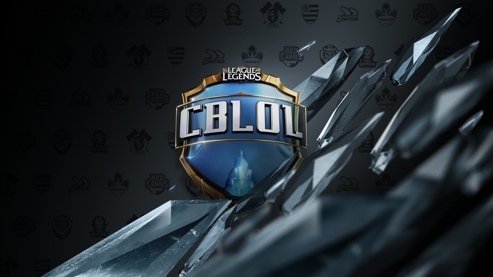
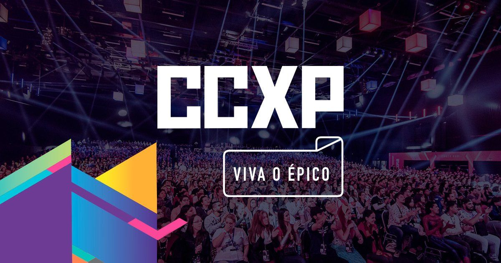

CBLoL significa Campeonato Brasileiro de League of Legends e é a principal competição de League of Legends do Brasil. É organizado pela Riot Games, a desenvolvedora do jogo, e ocorre anualmente, geralmente de janeiro a setembro. O CBLoL reúne os melhores times de League of Legends do Brasil em uma disputa por um prêmio em dinheiro e pela oportunidade de representar o país em competições internacionais. Além disso, o CBLoL é uma oportunidade para os jogadores profissionais de League of Legends mostrarem suas habilidades, e para os fãs do jogo acompanharem partidas emocionantes e torcerem pelos seus times favoritos.

Evento: Cblol
CCXP é a sigla para Comic Con Experience, que é um dos maiores eventos de cultura pop do mundo. Realizado anualmente em São Paulo, o evento é um ponto de encontro para fãs de quadrinhos, filmes, séries de TV, games e outras formas de entretenimento. A CCXP conta com painéis de discussão com celebridades, sessões de autógrafos, estandes de exibição de produtos e lançamentos de novidades no mundo do entretenimento. A primeira edição da CCXP aconteceu em 2014 e desde então o evento vem crescendo a cada ano, atraindo fãs de todo o Brasil e de outros países. Com uma programação diversa e emocionante, a CCXP é um evento imperdível para quem é fã de cultura pop.

Evento: CCXP